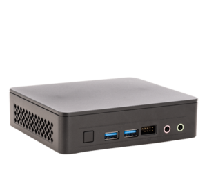

About Me
Hi, I'm Luke! I am 22 years old and have loved learning about technology all of my life. At around 20, I went down the rabbit hole of Home Automation which led to me setting up a low-power home server to host all my future projects with.
More recently, I built up a new desire for coding websites. With the help of Codecademy I developed a more refined knowledge of Frontend Development. This course is still ongoing, and after ~3 months of this course, I have created this portfolio website.

My Projects

Homeserver
An Intel NUC 11 running Proxmox VE which controls most of my projects.

Portfolio
This website that introduces myself, my projects, and skills.
My Recipes
A personal recipe website for cooking and baking